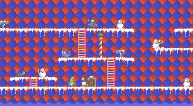

Si... asi es... ahora disponible como ShareWare, el fabuloso juego que
vino a quedarse entre nosotros.... PENGO ISLAND.

Vive las fabulosas aventuras de un pinguino que debe luchar por su
vida en un mundo lleno de Focas, hombres de nieve, e incluso Cangrejos
Mutantes que intentan acabar con nuestro heroe.
La la presente version incluye todos los archivos necesarios
para ejecutarlo, pero como esta es una version ShareWare, no estaran
todos los peligros y niveles activos :( ..... Pero no desesperes, si
mandas 1000 pesos a Alejandro Vera (avera) tendras la version
completa y recibiras todas las nuevas versiones que aparescan del
juego.
 Hace click AQUI para tener el Manual de PENGO ISLAND.
Hace click AQUI para tener el Manual de PENGO ISLAND.
- Hace click AQUI para obtener los archivos
- Hace click AQUI para vaolver a Alejo's Home Page